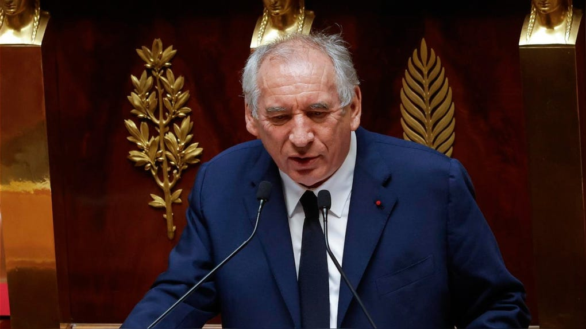

El sistema de justicia peruano atraviesa uno de sus momentos mas convulsos tras confirmarse la destitucion del magistrado Richard Concepcion Carhuancho, figura central en los procesos por corrupcion y lavado de activos vinculados al caso Odebrecht y otras grandes tramas de poder.
En una resolucion que ha sacudido los cimientos de la judicatura nacional, la Junta Nacional de Justicia (JNJ) ha decidido separar oficialmente de sus funciones al juez Richard Concepcion Carhuancho. La noticia, emitida en las ultimas horas, marca un punto de inflexion en la historia judicial reciente del Peru, debido a que el magistrado estuvo al frente de los despachos que dictaron algunas de las medidas cautelares mas mediatizadas de la historia politica del pais sudamericano.
Un historial de decisiones historicas
Richard Concepcion Carhuancho se habia consolidado como un simbolo de la lucha contra la corrupcion sistematica, ganando tanto detractores como fervientes defensores a lo largo de su carrera. Su rostro se hizo familiar para millones de peruanos cuando asumio la investigacion preparatoria del Caso Lava Jato en el ambito judicial. Fue el responsable de emitir las ordenes de prision preventiva que afectaron a las mas altas esferas de la politica peruana.
Entre sus resoluciones mas recordadas figuran las restricciones severas y prisiones preventivas dictadas contra la lideresa de Fuerza Popular, Keiko Fujimori, asi como contra los expresidentes de la Republica Alejandro Toledo y Ollanta Humala. Estas medidas, adoptadas en su momento bajo el argumento de peligro procesal y obstruccion a la justicia, sentaron jurisprudencia pero tambien abrieron profundos debates juridicos y polarizaron a la opinion publica.

Los motivos de la destitucion
La medida adoptada por la Junta Nacional de Justicia responde a procesos disciplinarios acumulados que evaluaban la conducta funcional del magistrado. Segun los argumentos expuestos en el procedimiento, se habrian detectado supuestas irregularidades en el manejo de plazos y procedimientos durante sus actuaciones jurisdiccionales, lo que habria constituido una falta grave segun la normativa interna del poder judicial.
Sin embargo, la decision ha provocado reacciones encontradas en el espectro politico y juridico. Mientras que algunos sectores critican la severidad y el momento politico en el que se produce la sancion, otros sostienen que ningun juez esta exento de rendir cuentas estrictas sobre el debido proceso y la correcta aplicacion de las normas constitucionales.
"La independencia judicial debe ir de la mano con la estricta observancia del debido proceso, un equilibrio delicado que la justicia peruana debe garantizar en cada una de sus instancias."
Repercusiones en los casos emblematicos
La salida de Concepcion Carhuancho del aparato judicial genera interrogantes inmediatas sobre el futuro y la continuidad de los macroprocesos en curso. Si bien las etapas de juicio oral de varios de estos casos ya se encuentran radicadas en salas superiores y colegiados especificos, la remocion de una pieza clave en la fase de investigacion preliminar altera la percepcion de estabilidad en la administracion de justicia.

Colegios de abogados, organizaciones de la sociedad civil y observadores internacionales siguen de cerca los acontecimientos en Lima. Las proximas horas seran decisivas para conocer si la defensa legal del magistrado interpondra acciones de amparo u otros recursos impugnatorios para revertir una decision que ya marca un antes y un despues en la judicatura peruana.